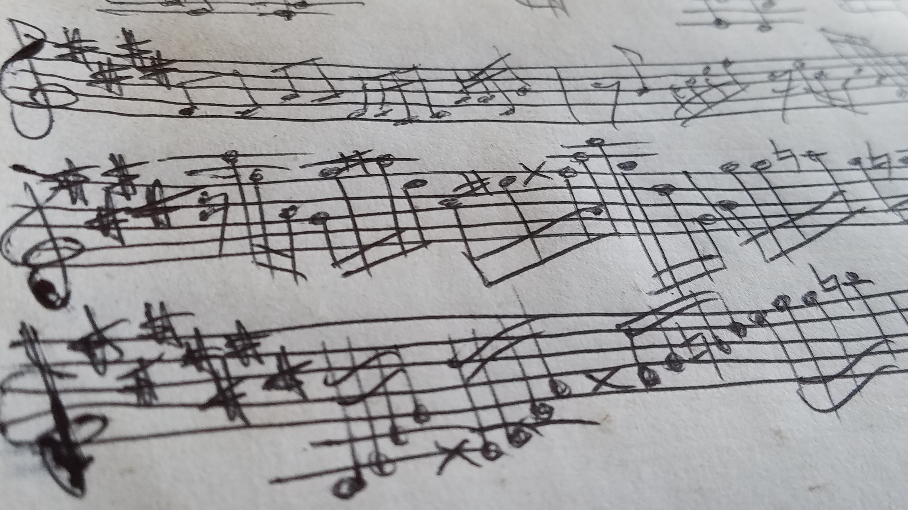

❮
❯
Aaron grew up in Everett, Washington.
He learned piano, violin, guitar, bass guitar, clarinet, flute, sang in choirs, and developed a broad love of music and reputation for originality and skill in school and professionally.
Aaron has had an enduring interest in video games and game music and computers, math, and music as well as languages, music theater, sailing, swimming, hiking and skateboarding.
He currently works at Buse Timber, a high-volume sawmill that produces large douglas-fir and hemlock beams and boards in custom dimensions
| Music Library | Some samples of my compositions. |
| Debarker Silmulator. | A simulator of the machine I used to run in the log yard. |
| Scale Selector. | In each of the twelve keys, all twelve pitches have names assigned to them based on their relationship to the base of the scale. |
| MusicNotes | My idea of what music notation should look like on a computer or mobile. |
| Square Div Hero | A video game featuring a square hero |